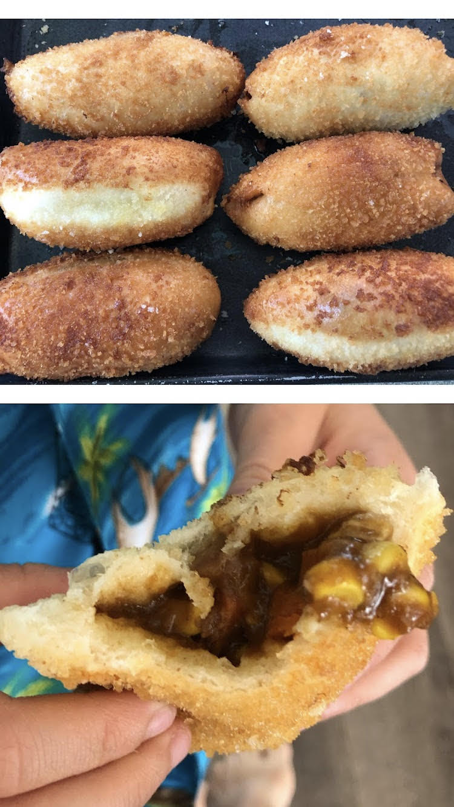

Curry Pan

Description
Yummy fried Japanese curry pan. Best made with leftover curry.
Curry is the best, eat more curry. This bread can be frozen and easily
reheated.
Ingredients
- 150 g bread flour
- 50 g cake flour
- 3 g salt
- 15 g sugar
- 3 g yeast
- 125 ml whole milk
- 10 g unsalted butter
- about 300 g leftover curry
- 1 large egg
- 60 g panko
- oil for frying
Steps
-
In a large bowl, whisk together bread flour, cake flour, kosher salt,
and sugar.
-
Microwave the milk until warm to the touch. Then add in the yeast and
sugar to the warm milk.
-
Combine the wet and dry ingredients together, knead with kitchenaid.
-
Place dough in greased bowl and let rise one hour or until doubled.
-
Punch dough down. Cut dough into 8 peices.
- Cover the 8 balls and let rest for 15 minutes.
-
Fill each flattened dough peice with leftover curry. Pinch the seam.
Fold over seam and pinch again.
-
Dip in egg and panko. Cover and let rise for 45-60 minutes or until 1.5 times its
size.
- Deep fry with seam side down, then flip.